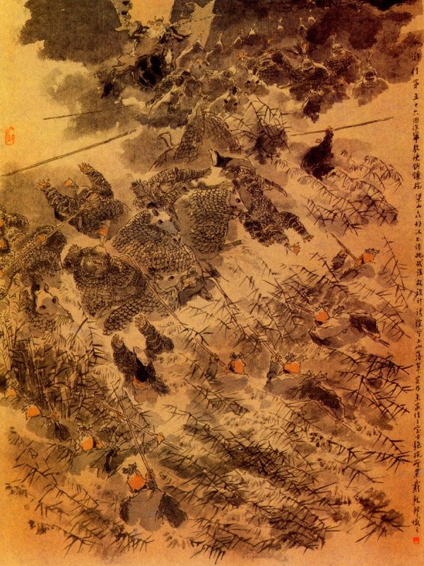
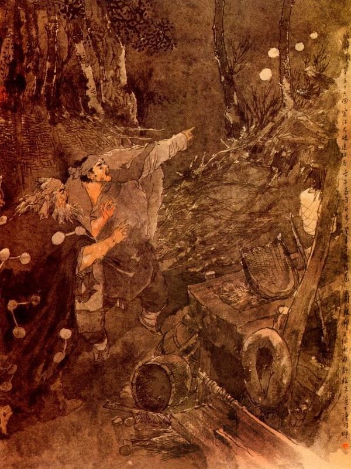
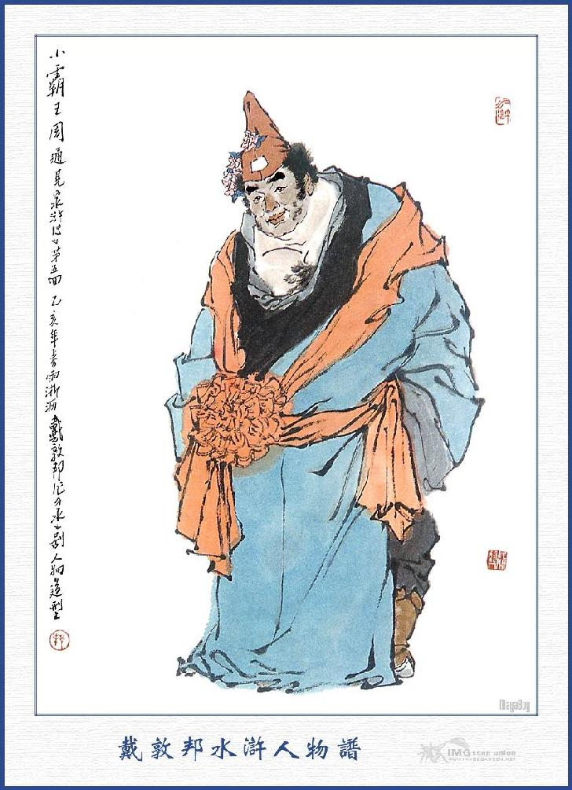

Bấy giờ Tiều Cái, Tống Giang, Ngô Dụng, cùng các vị Đầu Lĩnh trông thấy Từ Ninh mình sáu thước năm tấc, mặt trắng phau phau, ba chòm râu đen rưng rức, lưng rộng vai to, rõ ra đường đường tu my nam tử thì ai nấy đều vui mừng hớn hở trong lòng.
Khi tuyển quân xong, Từ Ninh liền xuống dưới sân Tụ Nghĩa sảnh, cầm cây Câu Liêm Sang múa mang một lúc, chúng trông thấy đều vỗ tay khen ngợi luôn mồm.
Từ Ninh bảo với quân chúng rằng:
- Phàm ngồi trên mình ngựa đánh Câu Liêm Sang thì lấy cỡ từ thắt lưng mà đánh, trên giữa bảy đường, ba lần giật, bốn lần lượn, một lần đâm, ba lần gạt, cộng có chín phép biến. Bằng đánh Câu Liêm dưới bộ thì trước hết đi tám thước vung ra bốn mặt để lấy thế rồi cứ mười hai bước một lần biến, mười sáu bước một lần giở mình chĩa Câu Liêm vừa đâm vừa giật, hai mươi bốn thước hất lên đè xuống, móc bên Đông, đánh bên Tây, ba mươi sáu bước quay mình như lọng che, cướp đánh lung tung không đâu không vỡ. Đó là phép chính đánh Câu Liêm Sang, có bốn câu thơ phải thuộc làm lòng để luyện:
Bốn rung, ba móc, thông bảy đường,
Chín lần biến đổi khác tay sang
Hai mươi bốn bước vung sau trước
Mười sáu bước nay, chuyển khác thường.
Từ Ninh đọc xong, lại cầm cây Câu Liêm, diễn theo phép chính một hồi ai trông thấy cũng đều vỗ tay khen ngợi. Từ đó trở đi, các quân sĩ ngày đêm luyện tập, không lúc nào trễ nải. Sau Từ Ninh dạy cho đám bộ quân, lấy cách nấp núp trong cỏ, móc chân giật cẳng, cùng ám pháp ba đường đánh dưới, đều bảo cho thông thạo hết cả.
Thấm thoát trong nửa tháng trời, trong sơn trại đã được sáu bảy trăm người đánh Câu Liêm Sang rất giỏi. Tống Giang cùng các Đầu Lĩnh cả mừng, liền cùng nhau để sắp sửa phá trận ngựa Liên Hoàn.
Nói về Hô Diên Chước, từ khi mất Bành Dĩ cùng Lăng Chấn, hàng ngày lại đem quân ra bến nước để khơi đánh. Trong sơn trại thấy vậy, chỉ cho các Đầu Lĩnh thủy quân ở dưới trại để coi sóc phòng bị, còn các bến nước thì để ngầm các cọc nhọn, để phòng khi thuyền bè các quan quân đến đánh, bởi vậy nên Hô Diên Chước có đem quân hai đường bên Tây bên Bắc núi, song không thể nào lấn sang sơn trại được.
Bấy giờ trong sơn trại đã luyện được quân đánh Câu Liêm Sang và Lăng Chấn đã chế được nhiều thứ hoả bác. Tống Giang liền bàn với các vị Đầu Lĩnh rằng:
- Binh pháp của Tôn, Ngô, lợi nhất là những nơi núi rừng chằm vũng. Vậy ngày nay ra trận không dùng đến ngựa, các Đầu Lĩnh đều đi bộ và đem quân bộ, chia làm mười đội để ra dụ giặc. Khi thấy mã quân bên kia kéo đến thì ta kéo quân chạy tràn vào các nơi vũng lau rừng cỏ và cho các quân Câu Liêm nấp sẵn ở đó, cứ mười tên biết đánh Câu Liêm Sang, lại cho xen mười tên quân biết đánh gậy móc vào. Hễ khi quân mã chạy tới nơi, các quân Câu Liêm đánh trước rồi đám kia thả gậy móc kéo ngựa lại để bắt. Như thế phỏng có được chăng?
Ngô Dụng khen rằng:
- Chính là phép dàn binh bắt tướng đó.
TỪ NINH
Từ Ninh cũng khen rằng:
- Phép đánh gậy móc trong trận Câu liêm cũng phải như thế mới được.
Tống Giang nghe nói liền cắt mười bộ đội quân ra đánh: Lưu Đường, Đỗ Thiên dẫn đội thứ nhất; Mục Hoằng, Mục Xuân dẫn đội thứ hai; Dương Hùng, Đào Tôn Vượng dẫn đội thứ ba; Chu Đồng, Đặng Phi dẫn đội thứ tư; Giải Trân, Giải Bảo dẫn đội thứ năm; Trâu Uyên, Trâu Nhuận dẫn đội thứ sáu; Nhất Trượng Thanh, Vương Nụy Hổ dẫn đội thứ bảy, Tiết Vĩnh, Mã Lân dẫn đội thứ tám; Yến Thuận, Trịnh Thiên Thọ dẫn đội thứ chín; Dương Lâm, Lý Vân dẫn đội thứ mười. Mười đội quân xuống núi để du địch đuổi theo.
Lại sai Lý Tuấn, Trương Hoành, Trương Thuận, ba anh em họ Nguyễn, Đồng Uy, Đồng Mãnh, cùng Mạnh Khang cưỡi chiếc thuyền ra bến nước tiếp ứng. Hoa Vinh, Tần Minh, Lý Ưng, Sài Tiến, Tôn Lập, Âu Bằng, sáu người cưỡi sáu con ngựa dẫn quân ra bên núi khơi chiến. Lăng Chấn, Đỗ Hưng chuyên giữ việc bắn súng, Từ Ninh, Thang Long coi sóc đám quân Câu liêm. Trung quân thì có Tống Giang, Ngô Dụng, Công Tôn Thắng, Đới Tung, Lã Phương, Quách Thịnh, coi sóc quân mã và sai bảo hiệu lệnh. Còn bao nhiêu Đầu Lĩnh đều ở nhà coi trại.
Khi cắt đặt xong vào khoảng canh ba đêm ấy, cho đội quân Câu Liêm Sang bên kia bến nước, ẩn nấp cẩn thận rồi mười đội bộ quân sang sau. Lăng Chấn Đỗ Hưng đem súng phóng hoả lên chỗ gò cao đặt giá súng cẩn thận tử tế để đợi rồi Từ Ninh, Thang Long, cầm đồ hiệu lệnh Câu Liêm Sang sau. Đến tờ mờ sáng hôm sau, Tống Giang đóng nhân mã Trung quân ở bên Tây bến nước, đánh trống khua cờ để hư trương thanh thế, bấy giờ Hô Diên Chước nghe báo Lương Sơn Bạc kéo ra, liền sai tướng Tiên Phong là Hàn Thao, đem ngựa Liên Hoàn ra bày trận trước. Đoạn rồi Hô Diên Chước đai nịt cẩn thận, thân cưỡi ngựa Ô Truy, dắt đôi chùy theo sau ra trận.
Khi ra tới nơi, thấy quân mã Tống Giang, bày bên kia đông như kiến cỏ. Hô Diên Chước liền sai bài trận mã quân lên trước rồi Hàn Thao chạy đến bàn rằng:
- Đội quân của Tống Giang ở bên chính Nam kia không biết rằng nhiều hay ít?
Hô Diên Chước nói:
- Bất kể nhiều hay ít, cứ thúc mã quân mà đánh trận đi.
Hàn Thao vâng lệnh, nổi hiệu toan kéo quân ngựa Liên Hoàn thẳng chạy sang phía chính Nam. Chợt thấy phía Đông Nam có một toán bộ quân kéo ra, Hàn Thao lại toan chia quân ra làm hai ngã để đón đánh. Chợt thấy phía Tây Nam cũng có một toán bộ quân kéo ra, cờ hiệu phất phới, trông rất oai nghiêm.
Hàn Thao trông thấy đành phải lui quân về, nói với Hô Diên Chước rằng:
- Ba mặt phía Nam đều có ba toán quân nổi hiệu cờ Lương Sơn không biết chia đánh bên nào cho tiện?
Hô Diên Chước nói:
- Lâu nay nó không ra đánh, nay tất có mưu mẹo chi đây?
Vừa nói dứt lời thì phía bên Bắc nổi một tiếng súng rất to.
Hô Diên Chước giận dữ mắng rằng:
- Tiếng súng đó chắc lại Lăng Chấn nối giáo cho giặc rồi.
Nói đoạn quay nom sang phía Bắc, lại thấy ba đội quân kéo cờ phất phới nhô lên. Hô Diên Chước bàn với Hàn Thao rằng:
- Cái này chắc là mưu mẹo của quân giặc, vậy tôi dẫn một nửa quân sang đánh mặt Bắc, còn Tướng Quân dẫn một nửa quân sang đánh mặt Nam mới được.
Nói xong vừa toan chia binh ra đánh thì thấy phía Tây lại có bốn toán quân mã kéo ra. Hô Diên Chước lấy làm nghi ngại không biết nghĩ kế ra sao? Chợt lại thấy về phía chính Bắc, có một dịp súng nổi lên, một tiếng súng cái, bốn mươi tiếng súng con, ầm ầm dậy đất long trời làm cho quân mã của Hô Diên Chước không đánh cũng phải rối loạn.
Hô Diên Chước thấy vậy, vội cùng Hàn Thao chia quân ra bốn mặt để đánh. Bên kia mười bộ đội quân, thấy đánh bên Đông thì toán bên Đông chạy, thấy đánh bên Tây thì toán bên Tây chạy, Hô Diên Chước cả giận, liền dẫn quân thẳng sang mặt Bắc để đánh. Quân sĩ Tống Giang thấy Hô Diên Chước kéo đến, bèn xô nhau vào khóm lách ngàn lau để trốn. Hô Diên Chước đuổi ngựa Liên Hoàn để đánh. Đám ngựa thừa thế chạy tràn vào các nơi cỏ lau lách không sao cản nổi.

Chợt nghe thấy đám lau cỏ, có tiếng hiệu còi nổi lên rồi bọn quân Câu liêm đều ra sức đánh ngã hai đoàn ngựa kèm hai bên, còn đám ngựa đi giữa thấy vậy, gào thét nhảy lên như châu chấu vậy. Bấy giờ những gậy móc đều đổ xô ra để trói lấy người.
Hô Diên Chước thấy vậy, biết là trúng kế Câu Liêm, bèn quay ngựa sang Nam để tìm Tiên Phong Hàn Thao. Bỗng đâu thấy súng nổ liên thanh ở ngay phía sau rồi thấy đám bộ quân Lương Sơn đuổi theo rầm rập như nước vỡ bờ đê không ngăn cản nổi.
Hô Diên Chước cả sợ, chạy tìm cho được Hàn Thao rồi dẫn một ít quân mã tháo đường để chạy. Khi đó thấy về phía bên Nam man mác những cờ hiệu của Lương Sơn Bạc, hai người phải bỏ chạy phía Nam mà tháo chạy sang đường Tây Bắc.
Hai chạy được dăm sáu dặm đường, chợt hiện ra một đội nhân mã có hai vị hảo hán là Mục Hoằng, Mục Xuân đều cầm đạo đao, ngăn trước đường đi mà quát lên rằng:
- Bớ bại tướng chạy đi đâu?
Hô Diên Chước nghe nói, nổi giận đùng đùng, múa song chiên xông ngựa lại đánh nhau với hai hảo hán. Mục Hoằng, Mục Xuân giơ đao lên đỡ, đánh nhau đến bốn hiệp rồi hai người kéo nhau bỏ chạy. Hô Diên Chước sợ trúng kế, không dám đuổi theo, liền tìm đường lớn về mặt chính Bắc mà chạy. Đương khi lật đật, chợt thấy cạnh sườn núi lại có một toán quân mã nhô ra, có hai vị hảo hán là Giải Trân, Giải Bảo đều cầm cương xoa chạy đến đón đánh. Hô Diên Chước múa song chiến đấu với hai người, được dăm sáu hợp thì Giải Trân, Giải Bảo bỏ chạy mất cả. Hô Diên Chước đuổi theo chừng nửa dặm đường, lại gặp Nhất Trượng Thanh, Vương Nụy Hổ dẫn quân mã ra ngăn giữa đường. Bấy giờ Hô Diên Chước trông quanh trông quẩn thấy lối khuất khúc toàn thị chông gai, chàng liền hết sức múa chùy đánh gạt người ra mà tháo chạy.
Vợ chồng Vương Nụy Hổ theo đuổi hồi lâu không kịp đành mặc cho Hô Diên Chước chạy về lối Đông Bắc. Đoạn rồi Tống Giang khua chiên thu quân kéo về sơn trại, để ban định thưởng công.
Khi ra tra điểm, bắt được ba nghìn ngựa Liên Hoàn mặc giáp, chia tư mất già một phần bị Câu Liêm đánh què, liền lột lấy áo giáp cho vào hạng ăn thịt, còn già hai phần toàn thị ngựa tốt, giao cho nuôi giữ để phòng khi ra trận. Quân sĩ mặc áo giáp bắt được rất nhiều năm nghìn quân bộ, có kẻ trốn trong trung quân bị Câu liêm kéo ra để bắt mà kẻ nào nhảy xuống nước cũng bị thủy quân bắt được. Còn quân sĩ bị bắt khi xưa, nay lại cướp được mang về, quân sĩ hết thảy vui mừng hớn hở.
Đoạn rồi phá trại của Hô Diên Chước, đem vào gần bến để làm tiểu trại và cho người sửa lại hai tửu điếm ở ngoài, để cho Tôn Tân, Cố Đại Tẩu, Thạch Dũng, Thời Thiên, chia làm hai toán quân mà cùng nhau coi giữ. Được một lát thấy Lưu Đường, Đỗ Thiên bắt được Hàn Thao đem giải về, Tống Giang cả mừng, thân hành cởi trói cho Hàn Thao, mời vào trong sảnh tiếp đãi rất là long trọng rồi bảo Bành Dĩ, Lăng Chấn dỗ dành Hàn Thao cùng vào đảng ở Lương Sơn. Hàn Thao nguyên cũng là một vị sao Địa Sát, nên vui lòng thuận phục mà ở với Tống Giang, Tống Giang liền bảo Hàn Thao viết thơ rồi sai người đưa đến Trần Châu để đón vợ con Hàn Thao về đó. Bấy giờ trong sơn trại mở tiệc ăn mừng mấy hôm trời rất là vui vẻ rồi các vị Đầu Lĩnh ai vào việc ấy mà cùng nhau ra sức chấn chỉnh Lương Sơn:
Ngọn cờ nghĩa hiệp xa bay
Nước non nở mặt cỏ cây kinh hồn.
Cùng nhau ra sức hợp đoàn
Dưới trời này dễ ai còn sợ ai?
Nói về Hô Diên Chước bị thua một trận, mất hết quân mã, chỉ còn trơ trọi một mình, không còn mặt mũi nào trở về kinh sư, liền nghĩ vơ vẩn, cởi cả mũ giáp buộc vào yên ngựa rồi đem bán đai vàng, để làm lộ phí mà đi. Chàng vừa đi vừa nghĩ, không biết đâu cho ổn tiện. Chợt nghĩ đến quan Phủ Mộ Dung ở Thanh Châu là người quen biết từ xưa, liền định kế sang đó để nhờ Mộ Dung Tri Phủ, nói với Mộ Dung Tri Phủ đem công chuộc tội rồi sẽ lấy quân đánh báo thù Lương Sơn Bạc.
Chàng đi đường trong hai ngày trời, chiều hôm đó đi đến một nơi, trong bụng vừa đói vừa khát, chợt thấy bên cạnh đường có một hàng cơm nho nhỏ, chàng bèn xuống ngựa buộc vào gốc cây trước cửa rồi đi vào trong hàng. Khi vào tới hàng, chàng vất đôi chiên trên bàn, ngồi xuống ghế, gọi tửu bảo đem rượu thịt lên, tửu bảo chạy đến nói rằng:
- Hàng tôi chỉ có rượu thôi, ngài muốn xơi thịt thì trong làng mới có người giết thịt dê, xin đưa tiền cho tôi đi mua vậy.
Hô Diên Chước móc túi, lấy tiền vụng bán đai vàng còn lại, đưa cho tửu bảo mà dặn rằng:
- Người trả lại một đùi dê nấu chín cho ta ăn và kiếm ít cỏ ngựa ăn một thể. Đêm nay ta ngủ đây rồi sáng mai sang Phủ Thanh Châu.
Tửu Bảo nói:
- Thưa ngài ngủ ở đây cũng được, song không có giường chiếu tử tế.
- Được ta là quan võ nằm đâu cũng được.
Tửu bảo vâng lời, cầm tiền quay ra mua thịt. Hô Diên Chước cởi áo mũ trên mình ngựa mang vào rồi ngồi ở trước cửa để đợi tên tửu bảo.
Được một lát tửu bảo mang thịt dê về, Hô Diên Chước bảo đem nấu chín thịt làm ba đấu gạo; và hai nai rượu uống, tửu bảo vâng lời quay vào, vừa nấu thịt làm bánh, vừa hâm nước nóng để rửa mặt rửa chân. Đoạn rồi tửu bảo dắt ngựa vào buộc ở nhà nhỏ đằng sau cho ăn cỏ.
Hô Diên Chước gọi lấy rượu lên uống trước. được một lát thịt chín Hô Diên Chước gọi tửu bảo lên cho cùng ngồi ăn uống mà nói chuyện rằng:
- Ta là quan của triều đình, ra đánh giặc Lương Sơn bị thua, nay định về dưới quan Mộ Dung Tri Phủ ở Thanh Châu, người nên coi sóc con ngựa cẩn thận, ngựa ấy là con Tích Tuyết Ô Truy của vua ban cho ta đó. Ngươi coi cẩn thận, sáng mai ta sẽ thưởng cho.
- Ngài có lòng thương, chúng tôi xin cảm ơn. song có điều này chúng tôi xin kêu để ngài rõ: Gần đây có ngọn núi Đào Hoa Sơn, trên có một bọn cường đạo, tên đầu đảng là Đả Hổ Tướng Lý Trung, thứ nhì là Tiểu Bá Vương Chu Thông, tụ họp tới năm bảy trăm lâu la để cướp bóc kiếm ăn thần thường lại quấy nhiễu dân gian rất là hung ác. Quan Tư đã mấy lần truy nã mà không sao trị được. Vậy đêm nay ngài phải tỉnh chút mới được.
- Được sức ta đây, mười vạn quân cũng không địch nổi, cho nó kéo cả tụi đến đây ta cũng không cần, ngươi cứ cho ngựa ăn uống tử tế cho ta.
Nói đoạn uống rượu ăn bánh, hồi lâu rồi mới đi nghỉ. Tửu bảo trãi một cái ổ ở giữa nhà cho Hô Diên Chước nằm. Hô Diên Chước vừa phần mấy hôm bị mệt nhọc lo nghĩ, vừa phần quá nhắp hơi men, có điều say chếnh choáng, liền để nguyên áo nằm vật xuống ổ ngủ luôn một mạch, mãi đến canh ba mới dậy, chợt thấy tửu bảo kêu la ầm ỷ ở sau nhà. Hô Diên Chước vội vàng trở dậy, với lấy đôi chiên chạy ra nhà sau hỏi tửu bảo:
- Làm chi mà kêu ầm lên thế?
- Tửu bảo nói:
- Ngài ôi! Tôi đây bỏ cỏ cho ngựa, chợt thấy hàng dậu bỏ tung ra mà ngựa đi đâu mất. Trông ra xa xa thấy có đóm đóm soi sáng ở quãng bốn năm dặm kia, chắc là tụi nó lấy mất ngựa rồi.
- Chỗ ấy là chỗ nào?
- Thưa ngài cứ theo con đường ấy thì chính là tụi lâu la, ở Đào Hao Sơn ăn cắp ngựa về lối đó.

Hô Diên Chước cả kinh, bắt tửu bảo phải dẫn đường để đuổi theo. Tửu bảo dẫn chàng đi tắt bên bờ ruộng gập gà gập gềnh, đuổi chừng ba bốn dặm đường, lại không thấy ánh lửa đâu nữa. Hô Diên Chước thở dài kêu lên rằng:
- Chết nỗi! Mất con ngựa của vua ban cho thì làm thế nào được bây giờ?
Tửu bảo nói:
- Xin ngài đành để mai đi trình Quan Tư gần đây rồi đem quân đánh phá, mới có thể cướp ngựa về được. Hô Diên Chước nghe nói, trong bụng rất băn khoăn buồn bã, trở về tửu điếm, khoanh tay ngồi đợi đến sáng rồi mượn Tửu bảo quảy giáp mã lên đường sang phủ Thanh Châu.
Khi xưa cờ mở trống dong.
Giờ sao thui thủi non sông một mình?
Anh hùng gặp bước lênh đênh,
Liếc trông đất đỏ trời xanh thêm sầu!
Chiều tối hôm đó Hô Diên Chước đi đến thành Thanh Châu ngủ trọ ở ngoài hàng một tối, đến sáng hôm sau mới đi vào trong phủ. Khi vào tới nơi, quan Phủ Mộ Dung thấy Hô Diên Chước, liền giật mình cả kinh mà hỏi:
- Nghe nói Tướng Quân đánh bắt giặc Lương Sơn, sao lại đến đây như thế?
Hô Diên Chước thở dài, đem các chuyện trước thuật cho Tri Phủ nghe.
Tri Phủ nghe đoạn nói với Hô Diên Chước rằng:
- Tướng Quân dẫu bị thua thiệt mất cả nhân mã, song chẳng qua mắc phải gian kế của giặc, chứ không phải tội của Tướng Quân. Vả lại trong hạt tôi, hiện nay cũng nhiều giặc cỏ, thường hay quấy nhiễu dân gian, vậy Tướng Quân hãy tạm ở đây, đánh phá bọn Đào Hoa Sơn, cướp lại con ngựa Ô Truy rồi sau sẽ đánh núi Nhị Long, núi Bạch Hổ mà trừ hết đảng cướp ấy đi. Bấy giờ tôi xin hết sức với triều đình, cho Tướng Quân đi đánh báo thù. Tướng Quân nghĩ sao?
Hô Diên Chước tạ ơn mà rằng:
- Nếu được ân tướng có lòng hạ cố như vậy thì thực là hạnh phúc cho tôi lắm.
Tri Phủ nghe nói, liền sai người mời Hô Diên Chước, vào nghỉ trong phòng, lấy quần áo cho thay rồi cho tiền tên tửu bảo trở về. Hô Diên Chước ở đấy luôn trong ba ngày, trong lòng lấy làm nóng sốt, mong lấy lại con ngựa Ô Truy, liền thúc giục Tri Phủ Mộ Dung để cho khởi quân đi đánh.
Tri Phủ điểm hai nghìn bộ quân cho Hô Diên Chước mượn và cho mượn một con ngựa Thanh Thông để đi ra trận. Hô Diên Chước vâng lạy tạ ơn mà mặc áo giáp lên ngựa, dẫn quân tới núi Đào Hoa.
Bọn Lý Trung, Chu Thông ở núi Đào Hoa, từ khi cướp được con ngựa Ô Truy, trong bụng lấy làm mừng hớn hở mà hằng ngày chè chén hỉ hả với nhau, chợt hôm đó thấy tiểu lâu la vào báo, có quân mã Thanh Châu kéo đến, Chu Thông đứng dậy bảo Lý Trung rằng:
- Xin Ca Ca coi trại, để tôi dẫn binh ra đuổi họ đi.
Nói đoạn điểm một trăm lâu la, cầm thương lên ngựa xuống núi để nghinh địch quan quân.
Bên kia Hô Diên Chước kéo quân tới, liền bày thành trận thế, đứng chực ở trước núi. Khi thấy Chu Thông ở trên núi xuống liền xông ngựa ra trước trận quát lên rằng:
Quân giặc cỏ kia, mau mau đến chịu trói đi.
Chu Thông nghe tiếng, liền dàn quân đứng thành chữ nhân rồi cũng múa gươm vỗ ngựa xông ra. Hô Diên Chước liền giơ chiên ra đánh Chu Thông, Chu Thông giơ gươm ra đỡ. Đôi bên đánh nhau chừng sáu bảy hiệp. Chu Thông biết thế không địch nổi, liền quay ngựa chạy về trên núi. Hô Diên Chước theo đuổi mấy bước, sợ mắc mẹo lừa đành phải quay ngựa chạy về, đem quân hạ trại dưới núi.

CHU THÔNG
Chu Thông chạy về sơn trại nói với Lý Trung rằng:
- Hô Diên Chước võ nghệ cao cường, không sao địch nổi, nếu nay mai họ kéo cả lên sơn trại đây thì anh em ta biết làm thế nào cho được?
Lý Trung nghĩ một lát rồi nói:
- Ta nghe Lỗ Trí Thâm, ở bên núi Nhị Long có nhiều bè bạn, lại có anh chàng nào, tên gọi Thanh Diện Thú Dương Chi và anh Hành Giả Võ Tòng, đều sức khoẻ muôn người không địch, vậy bất nhược ta viết một phong thư sai lâu la đem sang cầu cứu một phen. Nếu sau này đuổi được quan quân thì ta sẽ nương nhờ vào họ mà hàng tháng chịu đưa cống biếu cho yên, như thế có lẽ tiện hơn.
Chu Thông nói:
- Tôi cũng vốn biết các vị hào kiệt bên ấy, song chỉ e Hoa Hoà Thượng nhớ đến câu chuyện ngày xưa mà không đến cứu thì làm sao được?
Lý Trung cười rằng:
- Không, ông ta tính thẳng, bụng tốt, nay sai người đến tất là ông ta đến cứu.
- Nếu vậy xin Ca Ca viết giấy mau đi.
Lý Trung liền lấy giấy viết thư kể hết đầu đuôi. Rồi sai một tên lâu la theo lối sau núi, mang thư lên sang núi Nhị Long.
Nói về chùa Bảo Châu bên núi Nhị Long, từ khi Lỗ Trí Thâm, Dương Chí, Võ Tòng đến ở được ít lâu, lại thêm có bốn người Tiểu Đầu Mục đấn nhập bọn ở đó; Một người là Kim Nhỡn Bưu Thi Ân nguyên là con Lão Quản Doanh ở lao thành Mạnh Châu, nhân vì Võ Tòng giết chết nhà Trương Đô Giám, bị Quan Tư đến truy nã vây bọc quanh nhà, để bắt Võ Tòng, nên toàn gia phải dắt nhau đi trốn tránh giang hồ. Sau bố mẹ Thi Ân đều chết, lại nghe nói Võ Tòng đến lạc thảo ở núi Nhị Long, bèn tìm đến đó để cùng Võ Tòng nương tựa. Một người là Tháo Đao Quỷ Tào Chính, trước đã cùng Lỗ Trí Lâm mưu giết Đặng Long cướp núi Nhị Long rồi sau nhập đảng ở đó. Một anh là Thái Viên Tử Trương Thanh và vợ là Mẫu Nhược Xoa Tôn Nhị Nương, hai vợ chồng chuyên bán thịt người ở Thập Tự đất Mạnh Châu, sau nhân Lỗ Trí Thâm cùng Võ Tòng viết giấy dỗ dành nên mới đến đó nhập đảng.
Hôm ấy Tào Chính nghe nói có thư bên núi Đào Hoa đưa sang, chàng liền hỏi han cặn kẽ đầu đuôi rồi vào trong điện bẩm với ba vị Đầu Lĩnh.
Lỗ Trí Thâm nghe Tào Chính nói liền cười mà rằng:
- Ngày trước ta ở Ngũ Đài Sơn đi tới thôn Đào Hoa ngủ trọ ở đó rồi gặp thằng cha Chu Thông, đánh cho một mẻ thật là xiểng liểng. Sau Lý Trung nhận biết ta, lại mời sang chè chén một ngày, kết làm anh em và mời làm chủ trại. Ta nhận thấy chúng bụng dạ hẹp hòi, nên không muốn ở, bèn thầu của chúng mấy cái chén uống rượu bằng bạc mà trốn đi mất. Từ bấy cho đến nay, nay lại cho người sang cầu cứu đến ta. Hãy gọi tên tiểu lâu la lên đây, xem nó nói ra sao đã?.
Tào Chính vâng lời ra dẫn tên tiểu lâu la vào. Tiểu lâu la vào dưới điện, lạy chào mà nói rằng:
- Quan Mộ Dung Tri Phủ mới thâu được một viên tướng đánh Lương Sơn Bạc bị thua, tên là Hô Diên Chước, hiện sai sang đánh Đào Hoa Sơn, để cùng phá Nhị Long Sơn, Bạch Hổ Sơn nhân thể rồi sẽ cho mượn quân đến đánh báo thù Lương Sơn Bạc. Bởi vậy Đầu Lĩnh chúng tôi muốn sang nhờ Nhị Long ra tay cứu giúp cho rồi sau khi xong việc sẽ nộp khoản cung cống trước cửa Đại Vương đây.
Dương Chí nghe nói bảo với tên lâu la rằng:
- Chúng ta ở đây cũng phải coi giữ sơn trại, lẽ ra không thì giờ đâu mà cứu ứng các ngươi. Song một là ta nghĩ đến danh nghĩa của bọn hào kiệt giang hồ, hai là e khi Đào Hoa bị mất thì chúng lại ròm rõ đến đây, vậy nay ta cho Trương Thanh cùng Tôn Nhị Nương coi trại ở nhà, còn ba anh em ta hãy xuống qua đó đánh giúp một phen cho phải đạo.
Nói đoạn lập tức điểm năm trăm lâu la, hơn sáu mưới quân kỵ đều chỉnh tề giáo gươm mũ giáp mà kéo nhau sang núi Đào Hoa.
Lý Trung nghe biết tin đó, liền đem ba trăm quân xuống núi để ráp đánh. Bên kia Hô Diên Chước nghe báo Lý Trung kéo quân xuống, bèn dẫn quân bày trận chận ngang đường rồi xông ngựa ra đánh Lý Trung.
Nguyên Lý Trung tổ quán ở Định Nghĩa, thuộc phủ Hào Châu, xưa nay chỉ nhờ nghề đánh gậy để kiếm ăn, tướng người nhỏ bé mà võ nghệ tầm thường nên vẫn gọi là Đả Hổ Tướng.
Bấy giờ Lý Trung đánh nhau với Hô Diên Chước chừng mươi mười lăm hiệp, thấy sức yếu đuối không sao địch nổi, đành phải quay ngựa chạy lui. Hồ Diên Chước bèn phóng ngựa đuổi theo lên núi.
Tiểu Bá Vương Chu Thông thấy Hô Diên Chước leo lên, bèn đứng ở lưng chừng núi mà ném đá xuống. Hô Diên Chước vội vàng quay ngựa trở xuống mà không dám đuổi nữa.
Đương khi đó bỗng thấy đám quân mã đằng sau ồn ào cả lên, Hô Diên Chước liền hỏi:
- Có việc chi mà kêu ầm lên thế?
Quân sĩ đáp rằng:
- Phía sau có một đám nhân mã nào kéo đến, xin ngài kịp tới nom xem. Hô Diên Chước nghe nói vội vàng xông lại đằng sau để xem thì thấy đội nhân mã đã kéo gần đến nơi, có một ông sư phệ bụng cưỡi con ngựa trắng đi đến trước tiên mà quát lên hỏi rằng:
- Đứa nào là thằng thua trận ở Lương Sơn Bạc mà dám đến đây bắt nạt chúng ta đó?
Hồ Diên Chước nghe nói cũng quát lên rằng:
- Ta hãy giết thằng trọc này cho hả lòng một chút đã.
Nói đoạn múa song chiên đến đánh, bên Lỗ Trí Thâm cũng múa thiền trượng xông vào rồi hai bên đánh nhau đến bốn năm mươi hiệp mà không phân được thua.
Hồ Diên Chước thấy vậy khen thầm trong bụng rằng: "không ngờ lão sư này khá lắm!" Nghĩ đoạn rồi đôi bên khua chiêng thu quân.
Được một lát Hô Diên Chước lại hăng hái xông ra trận mà quát lên rằng:
- Lão sư hổ mang ra đây, ta quyết được thua với ngươi phen này.
Lỗ Trí Thâm nghe nói, vừa toan quất ngựa xông ra thì Dương Chí vội kêu lên rằng.
- Đại Ca hãy nghĩ để tôi bắt thằng này cho.
Nói đoạn múa đao vỗ ngựa xông ra đánh Hô Diên Chước.
Đôi bên đánh nhau bốn năm mươi hiệp, không quyết được thua, Hô Diên Chước lại khen thầm rằng: "Quái lạ! Ở đất này mà lại có hai tay võ nghệ giỏi như thế? Quyết nhiên không phải là giặc cỏ hẳn?”
Bên kia Dương Chí thấy Hô Diên Chước võ nghệ cao cường cũng lừa miếng phá đỉnh rồi quay ngựa về bản trận. Hồ Diên Chước thấy vậy, dừng ngựa lại mà không dám đuổi nữa. Đoạn rồi đôi bên cùng khua chiên thu quân.
Lỗ Trí Thâm nói với Dương Chí rằng:
- Chúng ta mới đến đây không nên đóng trại ở gần, phải lui ra ngoài hai dặm mà hạ trại rồi sáng mai sẽ đánh một mẻ cho quyết được thua.
Bàn xong liền kéo quân ra gò núi gần đó để đóng trại. Hôm đó, Hô Diên Chước trở về trong trướng một mìng lo nghĩ băn khoăn, những tưởng rằng ngựa đến nên công, dễ như phá trúc, dè đâu lại gặp tay đối thủ với mình, thực là vận đen quá đổi!
Đương nghĩ ngợi vẫn vơ, bỗng thấy Mộ Dung Tri Phủ cho người đến báo rằng:
- Ở phủ Thanh Châu, hiện có Khổng Minh, Khổng Lượng ở Bạch Hổ Sơn, dẫn người đến cướp ngục, vậy phải mang quân về coi thành lập tức.
Hô Diên Chước nghe báo, bèn thừa thế kéo quân về Thanh Châu lập tức. Ngày hôm Lỗ Trí Thâm, Dương Chí và Võ Tòng dẫn tiểu lâu la kéo cờ khua trống ra xem thì chỉ thấy trơ trơ có trại không mà nhân mã kéo đi đâu mất. Ba người thấy vậy cả kinh mà không hiểu ra sao? Đoạn rồi thấy Lý Trung cùng Chu Thông dẫn người xuống núi đón tiếp, ba vị Đầu Lĩnh cùng nhau kéo lên sơn trại, trong sơn trại mở tiệc khao mừng rất vui vẻ, huyên náo.
Bên kia Hô Diên Chước vừa dẫn binh mã đến Thanh Châu, chợt thấy một toán nhân mã của Khổng Minh, Khổng Lượng kéo đến bên thành, chàng liền phóng ngựa múa chiêng xông ra để đánh. Nguyên Khổng Minh, Khổng Lượng vì cạnh tranh với một người tài chủ trong làng, gặp lúc nóng máu giết chết cả nhà tài chủ rồi tụ tập dăm bảy trăm lâu la mà chiếm giữ Bạch Hổ Sơn, để cùng nhau cướp bóc tung hoành. Sau có một người chú là Khổng Tân, bị Tri Phủ bắt giam trong ngục Thanh Châu, nên Khổng Minh, Khổng Lượng đen quân mã sơn trại định đến phá ngục Thanh Châu, để cứu người chú.
Hôm đó kéo lâu la gần đến bên thành thì gặp Hô Diên Chước kéo quân đến đánh. Khổng Minh, Khổng Lượng bèn đem quân ra đối địch với Hô Diên Chước. Bấy giờ Tri Phủ Mộ Dung đứng ở trong thành nom ra, để xem hai bên đánh nhau được hai mươi hiệp, Hô Diên Chước thấy hai anh em Khổng Minh Khổng, Lượng tầm thường, liền ra sức bình sinh sấn đánh hai người mà khoe tài trước mặt Tri Phủ.
Khổng Minh, Khổng Lượng đấu được một lúc, thế lực cũng hơi kem kém, bất đồ chậm tay lỡ bước, bị Hô Diên Chước bắt sống được Khổng Minh mà cắp qua mình ngựa.
Khổng Lượng lấy làm ngã lòng, vội dẫn lâu la kéo nhau để chạy. Tri Phủ đứng trên mặt thành, trỏ bảo Hô Diên Chước đuổi theo.
Hô Diên Chước kéo quân đuổi bắt sống được hơn trăm người, rồi đem cả Khổng Minh, đem giải vào Thanh Châu. Quan Phủ Mộ Dung lấy làm mừng rỡ sai đem Khổng Minh đóng gông tử tội, giam vào trong lao với Khổng Tân rồi nhất diện khao thưởng tam quân mà thiết đãi Hô Diên Chước.
Tri Phủ hỏi đến chuyện Đào Hoa Sơn?
Hô Diên Chước đáp rằng:
- Chúng tôi định đến phá núi Đào Hoa Sơn thì dễ như phá trúc, dè đâu bị một bọn quân đến cứu ứng, trong đó có một lão sư to lớn và một anh hùng mặt xanh, đánh nhau đến hai lần, không sao mà thắng được. Hai anh ấy võ nghệ khá giỏi, quyết không phải là võ nghệ tầm thường như đám cướp bóc, bởi vậy nên quyết chưa được thành công.
Tri Phủ cười rằng:
- Lão sư ấy nguyên là tên Lỗ Đạt làm chức Đề Hạt trong phủ Lão Trung Kinh Lược ở Diên An Phủ, sau mới cắt tóc đi tu, người ta gọi là Hoa Hoà Thượng đó; Còn anh chàng mặt xanh tên là Thanh Diện Thú Dương Chí làm quan đến Chế Sứ Điện Suý Phủ ở Đông Kinh khi trước; lại còn một anh hành giả nữa, tên là Võ Tòng, tức là Võ Đô Đầu đánh hổ ở núi Cảnh Dương năm nọ. Ba người đó chiếm núi Nhị Long, tung hoành cướp bóc, mấy người Bộ Đạo tới nay vẫn không sao trừ được.
Hô Diên Chước lắc đầu mà rằng:
- Quả nhiên võ nghệ của họ, không mấy người theo kịp, xưa nay có tiếng Dương Chế Sứ, Lỗ Đề Hạt thực là xứng lắm. Nhưng mặc lòng, tướng công không ngại, tôi đã đến đây, tất xin bắt sống từng người, để đem về nộp Tướng Công mới hả lòng.
Tri Phủ nghe nói cả mừng, liền rót rượu chúc cho Hô Diên Chước, rồi lưu nghỉ ở phòng khách trong phủ.
Về phần Khổng Lượng hôm đó bị thua một trận xiểng liểng liền cho lũ quân tàn kiếm đường chạy mau cho thoát. Đương khi kéo quân tháo chạy, bỗng thấy ở khu rừng phía trước, có một toán quân sĩ kéo ra rồi thấy một vị hảo hán là Võ Hành Giả cưỡi ngựa cầm đao đi trước.
Khổng Lượng trông thấy, vội vàng xuống ngựa lạy rạp xuống đất mà rằng:
- Kính chúc ngài lâu nay được mạnh khoẻ.
Võ Tòng đỡ dậy đáp rằng:
- Nghe nói anh em túc hạ chiếm núi Bạch Hổ, đã mấy phen toan sang bái kiến mà chưa có thì giờ để sang hầu được. Vậy nay chẳng hay túc hạ có việc gì qua tới nơi đây?
Khổng Lượng liền đem chuyện cứu Khổng Tân và Khổng Minh bị bắt mà thuật lại cho Võ Tòng nghe.
Võ Tòng bảo Khổng Lượng rằng:
- Nếu vậy túc hạ không ngại. Tôi có sáu bảy anh em cùng nhau tụ nghĩa ở núi Nhị Long, nay vì Lý Trung, Chu Thông bên núi Đào Hoa bị Hô Diên Chước kéo quân đến đánh, phải cầu chúng tôi sang cứu. Tôi cùng Lỗ Đề Hạt, Dương Chế Sứ có đem lâu la sang đánh nhau một trận, không biết vì sao, bỗng dưng Hô Diên Chước bỏ trại chạy trốn ngay đi đâu mất. Nhân vậy họ lưu ba anh em chúng tôi ở lại uống rượu mà tặng cho con ngựa Tích Tuyết Ô Truy rồi giữ mãi đến bây giờ mới tháo ra về được. Hai người anh em chúng tôi đi sau kia. Để các ông ấy đến đây, tôi bàn cách cứu túc hạ có được không?
Khổng Lượng cúi đầu lạy tạ mà rằng:
- Nếu được các ngài hạ cố như vậy thì còn gì hơn nữa.
Nói đoạn hai người cùng đứng một lát, thì thấy Lỗ Trí Thâm cùng Dương Chí cỡi ngựa đi đến, Võ Tòng liền dẫn Khổng Lượng đến chào hai người, rồi thuật chuyện cho nghe và lại nói rằng:
- Khi trước tôi cùng Tống Công Minh ở nhà ông ta quấy quả cũng nhiều, vậy ngày nay nên lấy nghĩa khí làm trọng, phải lấy nhân mã ba núi, đến đánh Thanh Châu, giết Tri Phủ Mộ Dung cứu hai người ấy ra rồi bắt Hô Diên Chước, cướp lấy Phủ Khố tiền nong, để đem về sơn trại các ngài nghĩ sao?
Lỗ Trí Thâm nghe nói, gật đầu đáp rằng:
- Tôi cũng theo ý như vậy.
Nói đoạn liền cho người bảo với Lý Trung, Chu Thông đem lâu la đến, để cùng tụ họp ba núi mà tiến đánh Thanh Châu.
Dương Chí lại nói với ba người rằng:
- Phủ Thanh Châu Hào sâu thành vững, ngựa khoẻ, quân nhiều, lại thêm có Hô Diên Chước là tay anh hùng trí dũng. Việc này không phải là tôi rút rát làm giảm uy phong của mình. Song muốn đánh Thanh Châu thì tất phải nghe tôi lời này mới được.
Ba người nghe nói, đều lấy làm ngạc nhiên không hiểu, liền xúm lại để xem Dương Chí bàn định ra sao?
Cho hay:
Bốn phương sôi nổi tăm kinh
Trò đời hai chữ "bất bình" gây nên
Anh hùng lắm bước truân chuyên
Nước non vương mãi chút duyên tang bồng
Đôi phen gió cuốn bụi hồng
Lò than nghĩa hiệp càng nồng hơn xưa.
Bắc nam ai hẹn bao giờ,
Chẳng qua cùng một thế cờ phải xoay.
Lời bàn của Thánh Thán
Tác giả tả Tống Giang chia ra mười đội quân dụ địch, không chia ra từng phương diện (nơi nào), chỉ nhất tề ra đi, đến sáng ra mới tả ba mặt dụ quân cùng chẳng chia ra đội hiệu cũng lại nhất tề kéo đến, tuy rằng một chốc thế văn trên giấy, xem như núi lỡ mưa sa, lửa bầng đồng nội, song khiến cho trong lòng độc giả không biết đầu đuôi đánh tự chốn nào, kể cũng buồn buồn, buồn buồn chưa xong, lại bỗng đâu đánh nhoàng ở phía Tây Bắc Mục Hoằng, Mục Xuân, phía chính Bắc Giải Trân, Giải Bảo: Đông Bắc đánh nhoàng ra Vương Nụy Hổ, Nhất Trượng Thanh, vậy bảy đội kia khổ chiến tựa mây mờ khiến ba đội này như rồng thò nanh vuốt thì bảy đội khôn lường, cho tỏ ba đội xuất kỳ, có ba đội rõ ràng, càng thấy bảy đội kia thần biến, chẳng duy thế mà thôi. Sau khi thu quân để định công chợt đâu lại đánh nhoàng hiện ra một đội Lưu Đường, Đỗ Thiên bắt sống Hàn Thao. Hỡi ôi! Trước đoạn này có chiến, sau đoạn này có chiến, theo phép chuyện, hoặc trước chỉnh sau biến, hoặc trước mất đi sau rõ ra, cái lạ vốn không lạ bằng suốt hồi khi đó không rõ ràng ra, đến cuối mới đánh nhoàng một cái, hai cái, ba cái hiện ra, tưởng là hết, cuối cùng còn đánh nhoàng một cái nữa hai người, lại tả nốt ra.
Đương khi tả ra mỗ này, mỗ này. là mười đội, mỗ này, mỗ này. phong pháo; mỗ này, mỗ này, là cầm lệnh, đều biết đã định đâu vào đấy cả rồi. Đến sáng ngày chợt đâu tả ra mười đội, bỗng dưng tả phóng pháo; bỗng dưng tả nổi hiệu, bấy giờ độc giả, chính đọc mười đội, chợt đâu chỉ thấy pháo nổ; đương đọc chỗ phóng pháo, chợt đâu lại là mười đội, đương đọc chỗ mười đội, chợt đâu nghe nổi hiệu, đương xem nổi hiệu chợt đâu lại nghe pháo nổ, khiến cho trên giấy bấy giờ cũng mấp máy động lên, chẳng thể nào không khiến độc giả khỏi ù tai choáng mắt mà cũng không khai rằng chính tác giả đã nhàn tâm, vội bút thế nào, lạ thay! Kỹ thuật tả văn đến thế!
Ta đọc đoạn văn Hô Diên Chước yêu ngựa mà chẳng hay giọt lệ nhỏ sa, sao vậy? Vì Hô Diên Chước yêu ngựa, chẳng phải cứ riêng rằng thú của vua ban cũng chẳng cứ nó là thần mã mới tiếc! Cũng lại không phải trông cậy vào nó để khôi phục hùng oai? Chỉ vì thiên hạ cản ngăn, có gì sâu xa bằng cùng cơn hoạn nạn mà tình con người chẳng gì nặng bằng nghĩa giúp nhau lâu. Xét ra cùng cơn hoạn nạn thì từng có một chỗ sống chết với nhau; mà giúp nhau lâu thì thực có tính tình như một, thế thì còn phải bàn gì thân với sơ, hay người với vật, hay có tình với không tình?
Ta có người bạn trẻ, khi nhỏ ở trường làng mà chơi thân chẳng lúc nào rời nhau, dẫu của quý vì thiên hạ cũng không bằng người bạn trẻ ấy mà thiên hạ yêu ta cũng không ai bằng người bạn trẻ, thường với bạn ta đi lại, dù gió sớm mưa hôm cũng mò đến với nhau, dẫu của quý vì thiên hạ cũng không bằng người bạn trẻ ấy mà thiên hạ biết ta cũng không ai hơn người bạn trẻ ấy, ai ngờ người bạn trẻ mất đi; ta có một cái vòng chất nó xanh xám làm kiểu thô sơ, của chơi thiên hạ chả gì xấu hơn nó nữa, từ nhỏ bà ta đeo vào người, không ngày nào chẳng đeo vòng cũng như một quan thứ sáu trong năm quan: Một ngón tay nữa ở trong mười ngón, không may qua sông rơi xuống giữa dòng, đến nay như thiếu một quan, như cụt một ngón, với ba thứ đó, thiên hạ thiếu gì? Song ta nghĩ thủa nhỏ ngồi trong cửa sổ trường học tư làng, mỗi khi chiều học xong, mặt trời xế bóng, như thế bao năm coi tựa một ngày, ta đến nay vẫn tiếc ngồi trong cửa sổ, còn ngờ thân vẫn ở trường xưa. Hỡi ôi! Con người đạo học thì tại sao không cảm thông tình? Thế mà thiên hạ nói cảm nói tình, ta vốn biết rồi, ta chỉ rất ghét thiên hạ cứ nói cảm nói tình mà không làm được đến nơi đến chốn! Cho nên duy việc Hô Diên Chước yêu ngựa mà đặc biệt nêu ra.